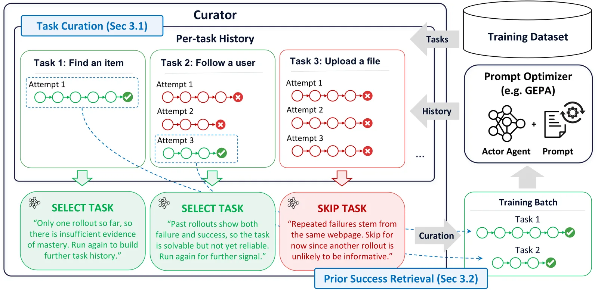
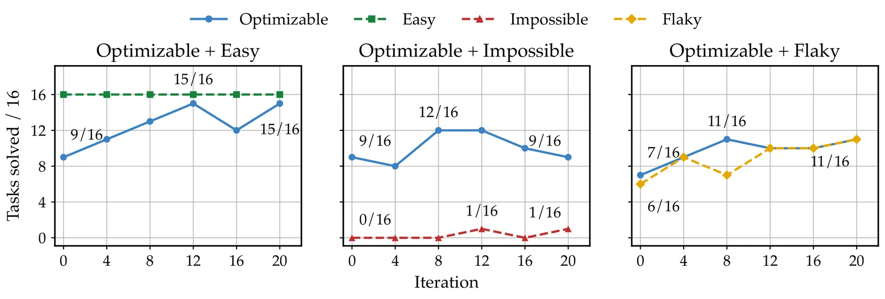
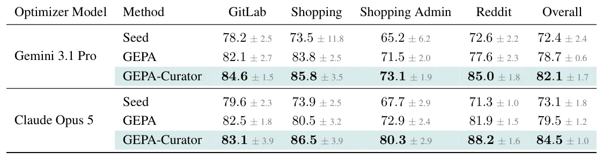
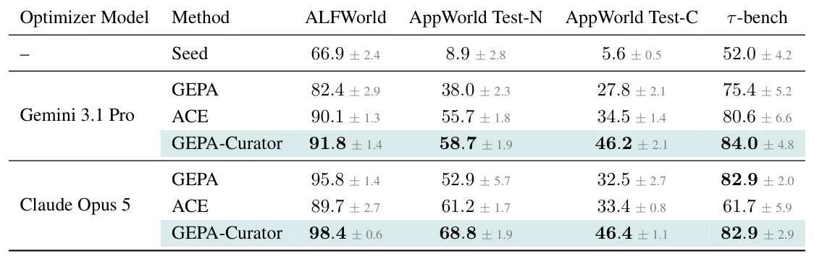

O Problema da Atribuição de Falha em Agentes
O aprendizado recursivo de auto-melhoria (RSI) promete que agentes baseados em LLMs podem melhorar seu próprio comportamento ao analisar experiências passadas. A abordagem reflexiva de otimização de prompts, utilizada em frameworks como o GEPA, funciona fazendo com que um "Refletor" analise trajetórias de execução para identificar lições e revisar o prompt do agente. A premissa central é que o sucesso ou fracasso em tarefas anteriores contém sinais generalizáveis para tarefas futuras.
Contudo, em ambientes agênticos complexos, atribuir a causa de uma falha exclusivamente ao prompt é problemático. O sucesso é frequentemente avaliado por um "juiz" baseado em LLM (LLM-as-a-judge) e a execução é mediada por um "harness" que interage com ambientes externos. Uma falha pode decorrer de limitações do harness, indisponibilidade de ferramentas, ou ruído na avaliação, não de uma fraqueza no prompt. Tratar esses sinais ruidosos como válidos leva o Refletor a fazer atualizações desnecessárias ou prejudiciais ao prompt.
Por exemplo, se um agente falha ao comprar um item porque o botão de compra está com defeito no site, otimizar o prompt para "buscar alternativas" é contraproducente. O problema persiste porque o mecanismo de compra estava quebrado, não porque o agente não sabia como agir. Trabalhos anteriores tentam mitigar isso usando conjuntos de validação para rejeitar mutações de prompts que pioram o desempenho, mas isso ocorre apenas após a mutação ser gerada, não melhorando a qualidade do sinal de aprendizado em si.

A Proposta: GEPA-Curator
Os autores apresentam o GEPA-Curator, um framework que atua como um "harness" sobre otimizadores de prompts existentes, como o GEPA. O objetivo é curar quais experiências do agente devem ser usadas para otimizar o prompt. O sistema possui dois componentes principais: curadoria de tarefas e recuperação de sucessos anteriores. A curadoria de tarefas filtra aquelas que provavelmente fornecem sinais de aprendizado ruidosos ou não confiáveis, enquanto a recuperação de sucessos retrieve trajetórias bem-sucedidas passadas para fornecer contexto adicional ao otimizador.
Essa abordagem reconhece que nem todas as falhas são iguais. Ao distinguir entre falhas "otimizáveis" (onde o prompt pode ser melhorado) e falhas "impossíveis" ou "instáveis" (flaky), o sistema evita contaminar o prompt com aprendizados errôneos. A curadoria não é baseada apenas em sucesso ou fracasso binário, mas utiliza informações contextuais para diagnosticar a causa raiz da falha, como limitações do ambiente ou ambiguidade da tarefa.
O GEPA-Curator não substitui o otimizador de prompts, mas o augmenta. Ele opera em um loop externo, decidindo quais dados alimentar o processo de reflexão. Isso permite que o otimizador foque em exemplos onde a ação do agente foi o fator determinante para o resultado, ignorando casos onde fatores externos dominaram o desfecho.
Mecanismo de Curadoria e Recuperação
A curadoria de tarefas envolve categorizar as tarefas em grupos como "Fáceis", "Otimizáveis", "Impossíveis" e "Instáveis" (Flaky). Tarefas fáceis já têm sucesso constante. Tarefas otimizáveis podem melhorar com mudanças no prompt. Tarefas impossíveis falham constantemente devido a limitações externas, e tarefas instáveis têm sucesso misto devido a ruído no ambiente ou na avaliação. O Curador diagnostica tarefas como impossíveis ou flaky se identificarem causas como falhas no harness, tarefas mal especificadas ou ruído no juiz.
Além de filtrar, o GEPA-Curator realiza a recuperação de sucessos anteriores. Quando um otimizador de prompts analisa uma tarefa, ele também recebe como contexto trajetórias de sucesso passadas para tarefas similares. Isso ajuda o Refletor a entender não apenas o que deu errado, mas também padrões de comportamento que levaram ao sucesso em contextos análogos, fornecendo um sinal de aprendizado mais robusto e menos propenso a overfitting em ruídos específicos.
A seleção de tarefas para o minibatch de otimização é feita de forma estratégica, priorizando tarefas que oferecem o melhor sinal de aprendizado. Isso contrasta com a seleção aleatória ou baseada apenas em frequência de erro, comum em abordagens anteriores. A combinação de filtragem de ruído e enriquecimento com sucesso prévio cria um ciclo de aprendizado mais limpo.

Análise dos Sinais de Falha
Os autores realizaram experimentos motivacionais para entender como sinais ruidosos impactam o aprendizado. Eles categorizaram tarefas do benchmark GoBrowse em GitLab e analisaram as causas de falha. A maioria dos diagnósticos de tarefas impossíveis foi atribuída a limitações do harness ou ambiente, como ferramentas indisponíveis. Tarefas flaky frequentemente apresentavam causas como tarefas defeituosas ou especulativas.
Um experimento comparou a curadoria do GEPA-Curator com um método de aprendizado de currículo numérico, que ajusta a seleção de tarefas apenas com base em históricos binários de sucesso e fracasso. O método numérico obteve desempenho inferior ao GEPA e à curadoria semântica do GEPA-Curator, demonstrando que informações binárias são insuficientes para distinguir entre falhas acionáveis e ruído.
A curadoria semântica permitiu que o sistema identificasse que tarefas com sucesso misto podiam ser tanto flaky quanto sensíveis ao prompt. Ao usar evidências dos rastros de execução, o Curador pôde distinguir melhor o ruído do ambiente de falhas reais do prompt, resultando em atualizações de prompt mais precisas.
Resultados Empíricos
O GEPA-Curator foi avaliado nos benchmarks GoBrowse, ALFWorld, AppWorld e τ-bench, usando Gemini 3.1 Pro e Claude Opus 5 como modelos otimizadores. No GoBrowse, o GEPA-Curator superou o GEPA e o prompt inicial em todos os domínios (GitLab, Shopping, Shopping Admin, Reddit). Com Gemini 3.1 Pro, obteve ganhos de desempenho significativos, demonstrando a eficácia da curadoria em ambientes web complexos.
Nos benchmarks adicionais, o GEPA-Curator mostrou melhorias consistentes sobre o GEPA e o ACE. No ALFWorld, com Gemini 3.1 Pro, a taxa de sucesso subiu para 91.8%, superando o ACE em 1.7%. No AppWorld Test-N, o ganho foi de 46.2% com Gemini e 46.4% com Claude Opus 5, superando ambos os baselines. Esses resultados sugerem que a curadoria de tarefas e a recuperação de sucessos são métodos gerais que beneficiam a otimização além de datasets ruidosos.
Os ganhos variam dependendo do benchmark e do modelo otimizador. Com Claude Opus 5, o GEPA-Curator superou o GEPA em 2.6% no ALFWorld, 15.9% no AppWorld Test-N e 13.9% no AppWorld Test-C, mantendo-se competitivo no τ-bench. A média de ganhos sobre o GEPA foi de 8.1% com Claude e 14.3% com Gemini, indicando robustez através de diferentes modelos base.


Ablações e Componentes Chave
Estudos de ablação no subset GitLab do WebArena isolaram o impacto de cada componente. A remoção da seleção de Pareto (parte da curadoria) reduziu ligeiramente o desempenho. A curadoria de tarefas sozinha e a recuperação de sucessos sozinha ambas superaram o baseline GEPA, com a recuperação de sucessos tendo uma leve vantagem (+1.9% vs +1.4%). A combinação completa do GEPA-Curator atingiu 88.6% de sucesso, demonstrando sinergia entre os componentes.
A análise mostra que a curadoria de tarefas é crucial para evitar a contaminação por sinais ruidosos, enquanto a recuperação de sucessos fornece o contexto necessário para otimizações mais inteligentes. Juntos, eles permitem que o otimizador de prompts tome decisões mais informadas, evitando atualizações baseadas em falhas externas e aproveitando padrões de sucesso anteriores.
Os resultados das ablações reforçam que a filtragem de ruído e o enriquecimento de contexto são complementares. A curadoria sozinha já traz benefícios, mas a adição de trajetórias de sucesso passadas maximiza o potencial de aprendizado do agente, resultando em prompts mais robustos e generalizáveis.
Limitações e Considerações Finais
Apesar dos resultados promissores, o paper não aborda a escalabilidade da curadoria semântica em escala massiva. O diagnóstico de tarefas como impossíveis ou flaky requer análise detalhada dos rastros de execução, o que pode ser computacionalmente custoso. Além disso, a eficácia do Curador depende da qualidade do modelo otimizador e da capacidade do LLM-judge em avaliar corretamente as trajetórias.
Outra limitação é a dependência da disponibilidade de trajetórias de sucesso passadas. Em cenários onde o agente encontra tarefas completamente novas sem histórico de sucesso, a recuperação de sucessos pode não ser aplicável. O sistema é projetado para melhorar o aprendizado incremental, mas seu comportamento em cenários de zero-shot ou poucos-shot não é o foco principal.
O GEPA-Curator representa um avanço prático na otimização de prompts para agentes, ao reconhecer que a qualidade do sinal de aprendizado é tão importante quanto a quantidade. Ao filtrar ruídos e aproveitar sucessos anteriores, o framework oferece uma via mais estável para a auto-melhoria de agentes LLM, mitigando um dos principais gargalos do aprendizado reflexivo.
O que fica
- Fracassos em agentes não indicam sempre falhas no prompt; podem ser ruído de ambiente ou ferramentas.
- O GEPA-Curator filtra tarefas impossíveis ou instáveis antes da otimização, evitando aprendizado tóxico.
- Recuperação de trajetórias de sucesso anteriores fornece contexto valioso para o otimizador de prompts.
- Métodos baseados apenas em curricula numéricas são inferiores à curadoria semântica proposta.
Paper original: GEPA-Curator: Curated Learning for Self Improving Agents
Comentários
Nenhum comentário ainda. Seja o primeiro.